Back to Portfolio
UX Case Study
NotebookLM Redesign
A UX case study focused on hidden affordance, grid structure, and the gulf of execution.
1. Project Snapshot
Project details and scope.
2. Role
My Role and Team Contribution
My Contribution
I completed six individual sketches during Sprint 1, covering hidden affordance, grid structure, and gulf of execution. I also contacted one participant for user feedback and helped complete the Sprint 1 report. During Sprint 2, I collaborated with the team to finalize the redesign direction and mainly worked on preparing and completing the Sprint 2 report after the redesign was updated.
Sudipta's Contribution
Sudipta completed his six Sprint 1 sketches and worked on the first redesign direction. He also collected one round of user feedback as required for the project. During Sprint 2, he contributed to the redesign work and helped prepare the presentation slides.
Ishika's Contribution
Ishika completed her six Sprint 1 sketches and worked with Sudipta on the first redesign. She also collected user feedback from her roommate. During Sprint 2, she primarily worked on the second redesign and helped with the Sprint 2 report.
Soham's Contribution
Soham completed his six Sprint 1 sketches, collected feedback from his lab co-worker, and worked with me on the Sprint 1 report. During Sprint 2, he primarily helped prepare the presentation with Sudipta.
How We Collaborated
As a team, we reviewed the existing NotebookLM site, identified three interaction design issues, created individual sketches, compared our alternatives, selected the strongest redesign directions, and built the prototype in Figma. After testing, we discussed user feedback and revised the design by adding carousel controls and restoring the option to summarize the full document.
3. Context & Target Users
Designing for researchers working with large sources.
We selected NotebookLM because it is often used to work through large bodies of text such as research papers, books, notes, and documents. Our target users were researchers who need to summarize, search, compare, and extract useful information from source materials efficiently.
Target User Population
Researchers and students working with long-form academic or professional sources.
4. Problem Statement
Important actions and task paths were harder than they needed to be.
Problem Statement
NotebookLM is useful for working with large sources, but our evaluation found three interaction issues that could slow users down or make actions less clear. The review carousel hid clickable source links, the landing-page grid used space unevenly, and the document upload flow did not clearly support users who wanted to summarize only a specific section.
Design Challenge
How might NotebookLM make important actions easier to discover, organize information more efficiently, and help researchers move from source upload to targeted summarization with fewer steps?
5. Skills Demonstrated
Methods used in the case study.
6. Interaction Issues
Three interaction issues shaped the redesign.
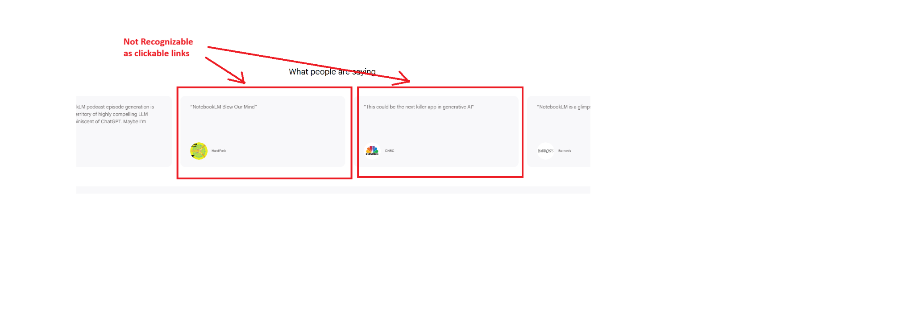
Hidden Affordance
The review carousel on the landing page contained cards that were clickable, but the interface did not clearly signal that the cards could take users to the original source.
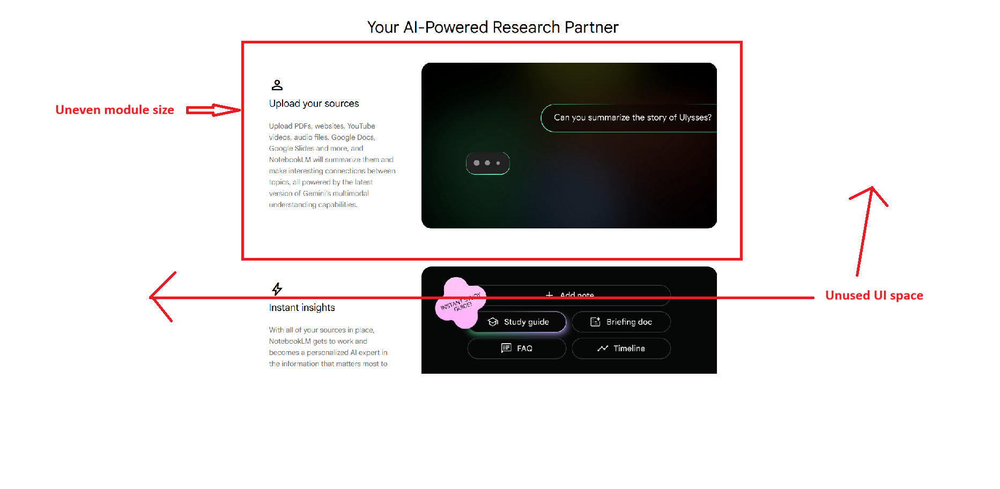
Grid
The landing page feature section used a two-column layout with uneven module spacing and unused whitespace, especially on wider screens.
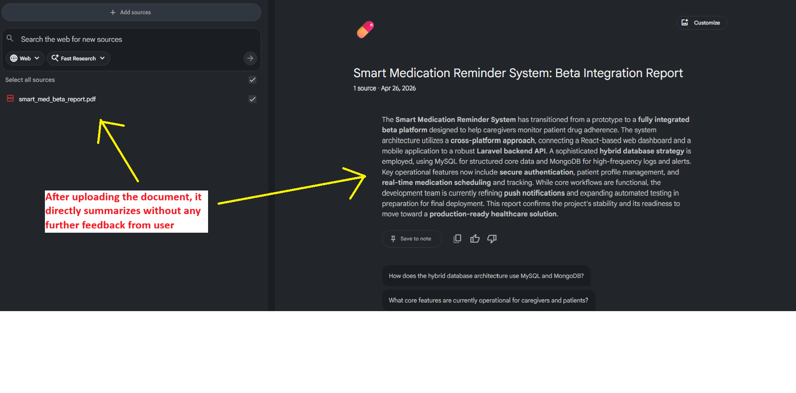
Gulf of Execution
After a document upload, NotebookLM summarized the whole source immediately. Users who wanted to summarize only a specific section had to wait for the full summary, then manually ask the chat for a more targeted result.
7. Design Process
From individual sketches to selected redesigns.
Explored the Existing Site
We reviewed NotebookLM's public landing page and the working notebook interface after uploading a source.
Defined Target Users
We focused on researchers and students who work with research papers, books, notes, and other long-form sources.
Identified Interaction Problems
We selected hidden affordance, grid structure, and gulf of execution as the three main problems.
Created Individual Sketches
Each team member created alternative sketches for each issue.
Selected Redesign Directions
We compared sketches and selected the approaches that best improved discoverability, structure, and task completion.
Built the First Figma Prototype
We redesigned the review carousel, feature grid, and document-selection flow.
Tested with Users
We tested the prototype using task-based measures such as time, discoverability, and number of steps.
Revised the Prototype
We added carousel arrows and restored whole-document summarization based on user feedback.
My Process Sketches
Early alternatives for the three redesign problems.
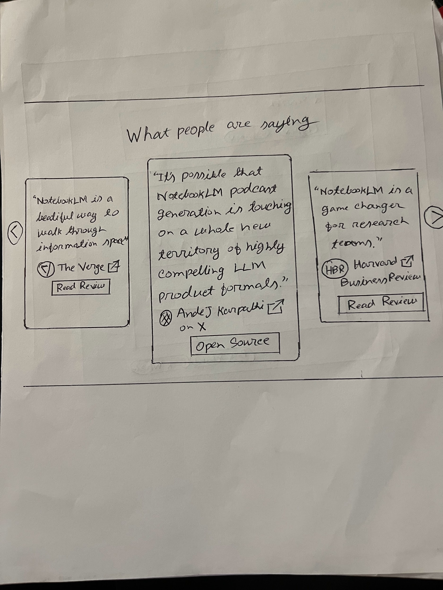
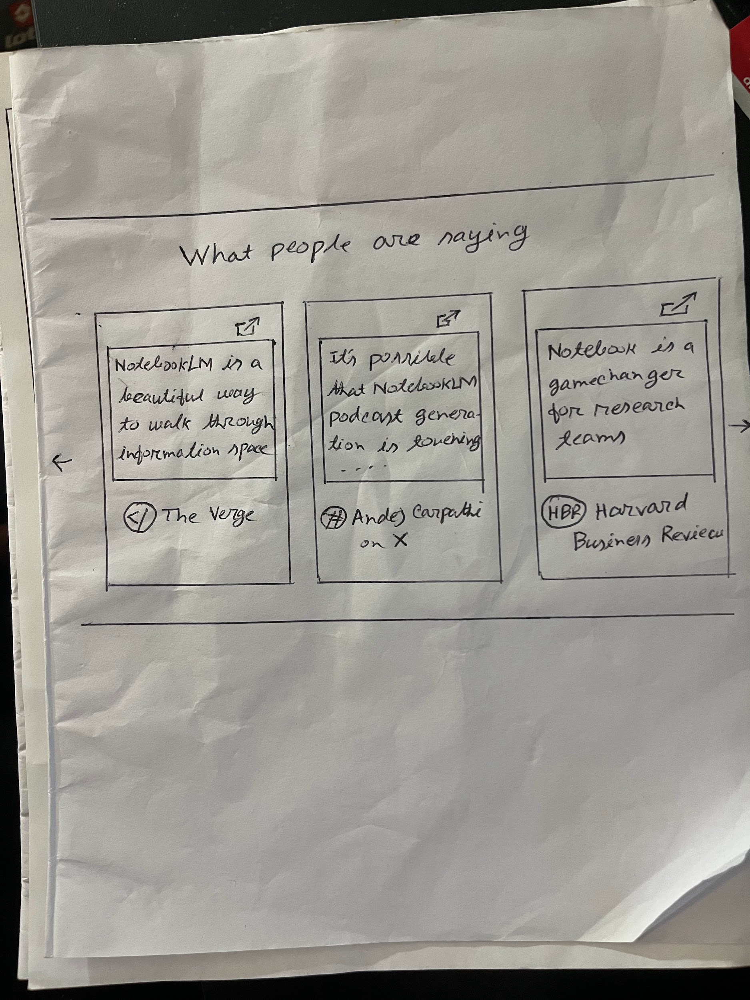
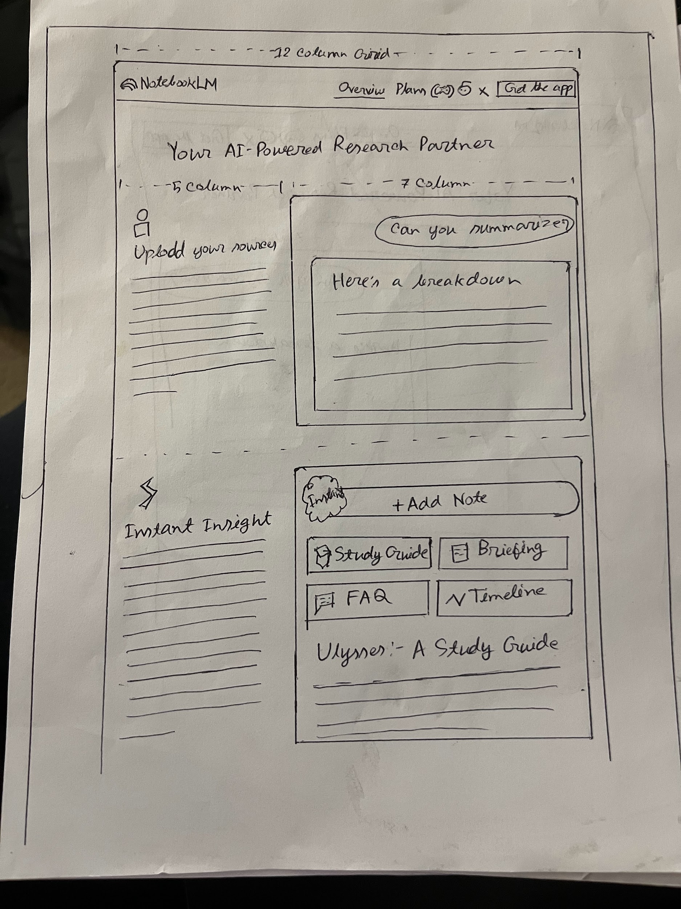
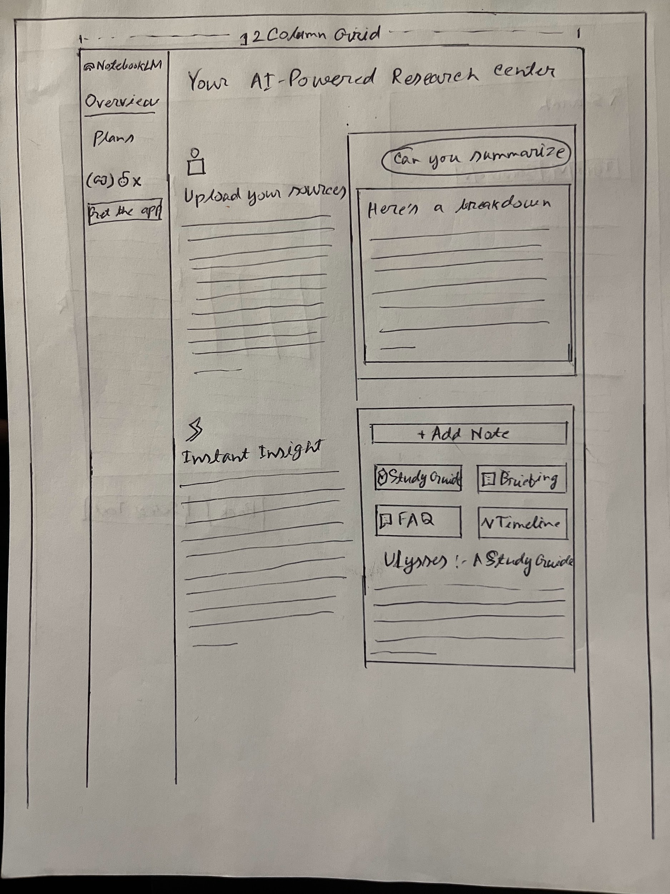
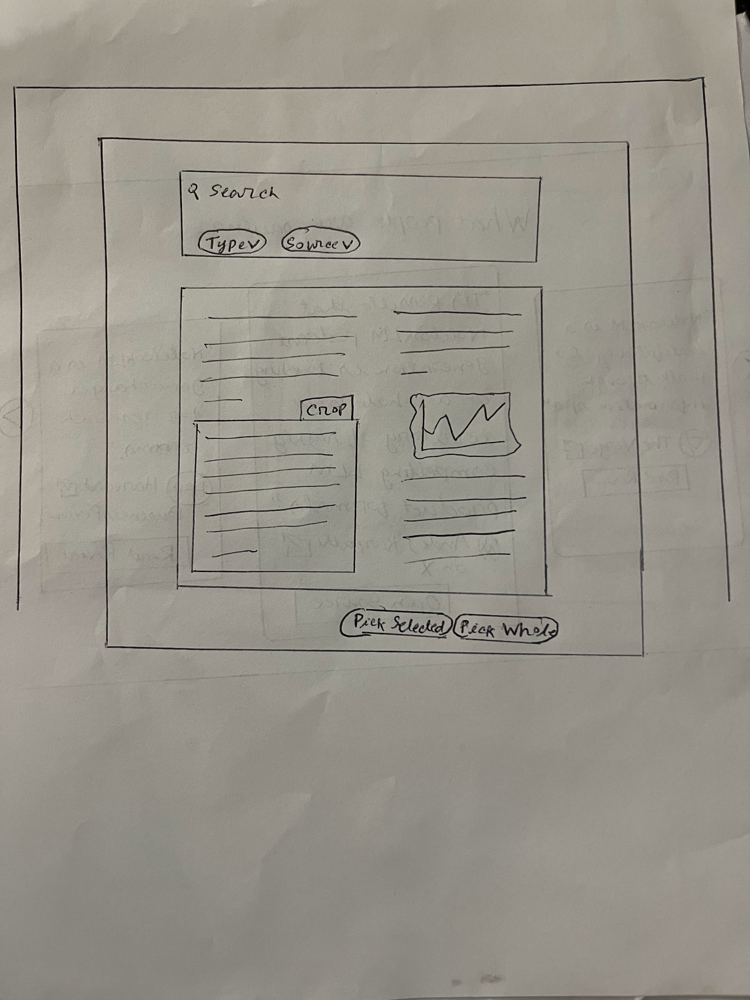
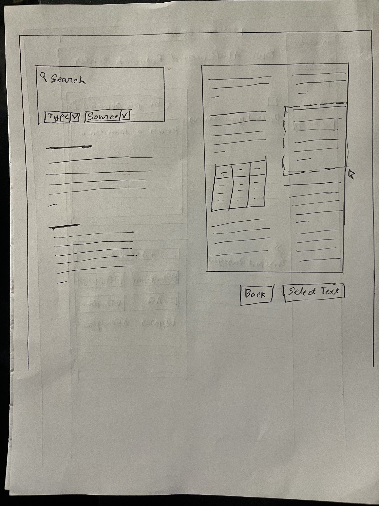
These sketches show my early alternatives for making the carousel affordance clearer, improving the grid layout, and reducing the gulf of execution during document upload.
8. Issue 1: Hidden Affordance
Making review cards feel actionable.
Problem
The original review carousel did not clearly show that the cards linked to external sources.
Design Decision
We added visible "Go to website" buttons to the review cards. In the second revision, we also added carousel arrows so users could control movement instead of relying only on auto-scroll.
Design Rationale
The redesign made the available action visible instead of requiring users to guess that the card itself was interactive. The arrows also gave users more control over navigation.
Testing Result
In the original design, the user could not find the source links within 10 seconds. In the redesign, the user found the linked button within about 5 seconds.
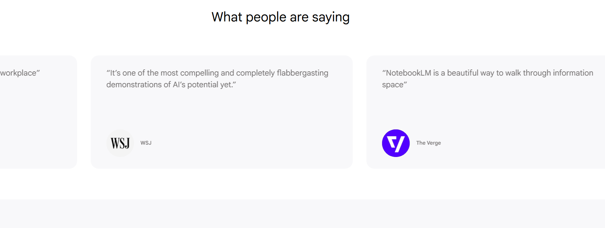
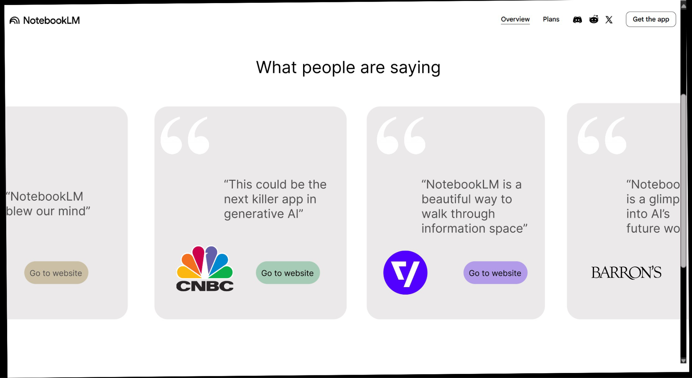
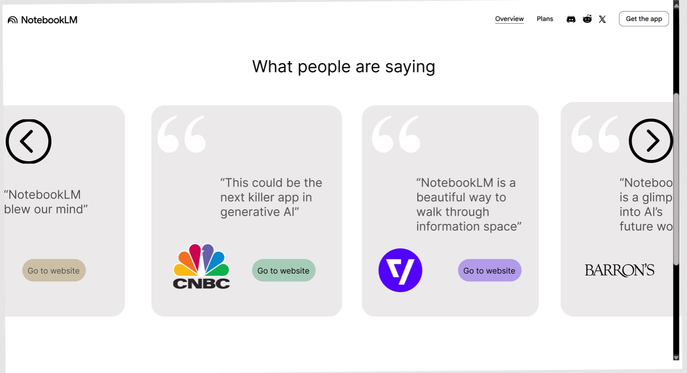
9. Issue 2: Grid and Information Design
Making the landing-page content easier to scan.
Problem
The original feature section used space unevenly and required more scrolling than necessary.
Design Decision
We reorganized the feature content into a more balanced modular grid. Each feature received a clear card-like area, making the content easier to compare and scan.
Design Rationale
The grid gave similar content equal visual weight and made the page feel more predictable. It also reduced unnecessary whitespace and helped users understand the first four feature blocks more quickly.
Testing Result
The original design took about 15-20 seconds for the user to read and understand the first four content blocks. The redesign allowed the same task to be completed in about 10 seconds.
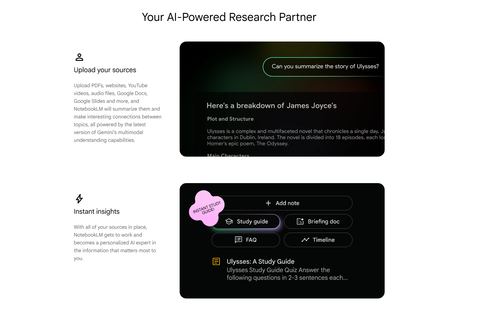

10. Issue 3: Gulf of Execution
Helping users summarize the exact section they need.
Problem
In the original flow, the system summarized the whole uploaded document without first asking whether the user wanted a specific section. Users who wanted a targeted summary had to ask again in chat.
Design Decision
We added a preview and highlighting flow so users could select a specific part of the document before generating the summary. In the second revision, we added back the option to proceed without highlighting, so users could still summarize the whole document.
Design Rationale
This reduced the gap between the user's goal and the available interface actions. Users could directly indicate the relevant section instead of correcting the system afterward.
Testing Result
In the original design, users needed about 5 steps to get a summary of specific paragraphs. In the redesigned prototype, users completed the task in about 3 steps.
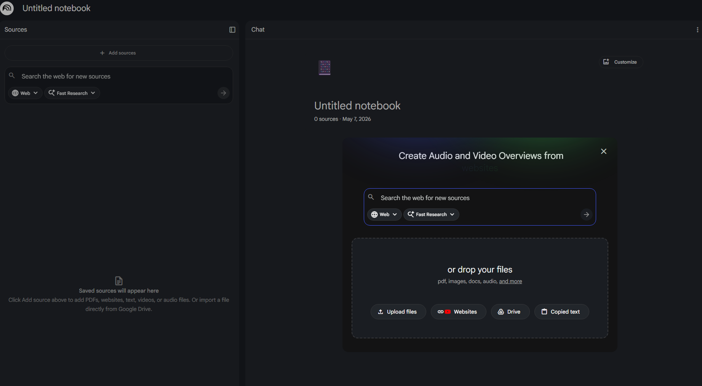


11. Testing and Iteration
What changed after user testing.
Grid Test
Task: Browse the page and understand the first four feature blocks.
Original: 15-20 seconds.
Redesign: About 10 seconds.
Observation: The redesigned layout showed more content in the same space and reduced scanning time.
Hidden Affordance Test
Task: Find the source website from the review carousel.
Original: User could not complete the task within 10 seconds.
Redesign: User found the source button within about 5 seconds.
Observation: The visible CTA made the affordance clearer.
Gulf of Execution Test
Task: Upload a document and summarize one or two specific paragraphs.
Original: 5 steps.
Redesign: 3 steps.
Observation: Users could select the exact section they wanted before summarization.
User Feedback
One user suggested adding arrows to control the carousel. Another user wanted the option to summarize the whole document, not only highlighted sections.
Second Revision
We added carousel arrows and restored the "Proceed without highlighting" option.
12. Design Principles Applied
Principles translated into concrete design decisions.
Visibility
Issue: Important actions were present but not always obvious, especially in the review carousel.
Design Decision: We added visible "Go to website" buttons and carousel arrows.
Design Rationale: Users could immediately see how to open source links and control the carousel.
Signifiers / Affordances
Issue: The review cards looked like static testimonials even though they were interactive.
Design Decision: We added clear call-to-action buttons and visual controls.
Design Rationale: The redesigned cards communicated what actions were available without relying on guessing.
Grid / Information Design
Issue: The landing-page feature section used space unevenly and was harder to scan.
Design Decision: We reorganized the content into balanced cards with consistent spacing.
Design Rationale: The modular layout gave related content equal structure and made the page more readable.
Mapping
Issue: In the original upload flow, the user's goal of summarizing a specific section was not directly mapped to an interface action.
Design Decision: We connected the document preview, highlighting action, and summarization action in one flow.
Design Rationale: The redesigned flow made it clearer how selecting text affected the generated summary.
Feedback
Issue: Users needed clearer confirmation that their selected document section would be used.
Design Decision: We used highlight states and action buttons such as "Select the highlighted part."
Design Rationale: The interface showed that the user's selection had been recognized before the summary was generated.
Constraints
Issue: The first redesign over-constrained the flow by removing the option to summarize the entire document.
Design Decision: We added "Proceed without highlighting" in the second revision.
Design Rationale: This kept helpful constraints for targeted summarization while preserving the original broader summarization path.
Consistency
Issue: Some redesigned actions needed to feel like natural extensions of NotebookLM's existing interface.
Design Decision: We reused NotebookLM-like visual patterns, dark interface elements, rounded controls, and familiar button styling.
Design Rationale: The redesign felt integrated with the existing product instead of feeling like a disconnected new tool.
Accessibility / Universal Design
Issue: Hidden links, unclear controls, and dense content could make the product harder to use across different devices and interaction styles.
Design Decision: We made actions visible, organized information into clearer modules, and preserved multiple summarization paths.
Design Rationale: These choices supported a wider range of users by reducing reliance on guessing, excessive scrolling, or a single workflow.
13. Final Outcome
Clearer actions, faster scanning, and fewer steps.
The final redesign improved NotebookLM in three areas. First, review-card source links became easier to discover. Second, the landing-page feature content became easier to scan through a more balanced grid. Third, the document-upload flow gave researchers a clearer way to summarize specific sections without extra back-and-forth in chat. User testing also revealed that the redesign needed to preserve whole-document summarization, which was restored in the second revision.
14. Reflection and Lessons Learned
What I learned from this redesign.
This case study taught me that improving one interaction can accidentally weaken another if the original workflow is not preserved. Our first redesign for targeted summarization reduced the gulf of execution for users who wanted a specific section, but it also removed the option to summarize the full document. The second revision was stronger because it supported both focused and broad workflows. I also learned that small visual cues, such as buttons and carousel arrows, can make hidden actions much easier to discover.